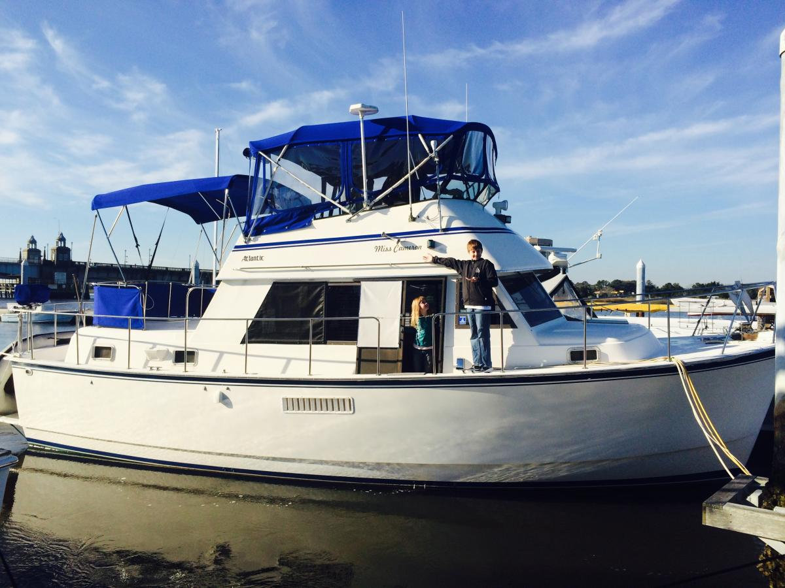

B-Scout Boat Guide · ATLB-37-TR
Atlantic 37 Double Cabin Double Cabin Trawler
1982–1992
The Atlantic 37 Double Cabin is a Taiwan-built trawler-style motoryacht derived from the Prairie 36 lineage rather than a Maine lobster-boat hull. It combines twin-diesel shaft propulsion, flybridge and aft-cabin accommodations for traditional low-to-moderate-speed cruising.

- Length
- 36.58 ft
- Beam
- 13.75 ft
- Draft
- 3.25 ft
- Hull behaviour
- Semi-Displacement
- Fuel
- Diesel
- Propulsion
- Shaft
- Engine configuration
- Twin diesel inboards
- Boat family
- Trawler
- Construction
- Fiberglass
Best for
- Couples wanting traditional aft-cabin trawler accommodations
- Extended inland and coastal cruising
- Buyers comfortable with older Taiwan-built systems
Trade-offs
- Aft-cabin/flybridge configuration carries more windage and systems than a simple Downeast cruiser
- Age-related deck, tank and system work can be substantial
- Not a true working-lobster-hull design despite inclusion in this batch
Known concerns
- No model-specific concern has been promoted to B-Scout’s evidence threshold. This does not mean the model has no age-, condition- or hull-specific risks.
Inspection focus
- Inspect decks, windows and flybridge penetrations for moisture
- Inspect tanks, wiring and plumbing
- Inspect both engines, cooling, exhaust, shafts and steering
- Verify aft-cabin and interior structure condition
- Confirm air draft and bridge-clearance configuration
Continue researching
Related boat models
Prairie 36 Coastal Cruiser Double Cabin
36.58 ft · Semi-Displacement
American Tug 365
36.5 ft · Semi-Displacement
Grand Banks 36 Classic
36.83 ft · Semi-Displacement
Grand Banks 36 Europa
36.83 ft · Semi-Displacement
Great Harbour GH37 Raised-Pilothouse Liveaboard Trawler
36.83 ft · Displacement
Great Harbour N37 Navigator / Long-Range Trawler
36.83 ft · Displacement
About this record
B-Scout preserves uncertainty: missing information remains unknown rather than being treated as a negative. Specifications and guidance describe the model record; individual boats can differ by year, equipment, refit and condition.